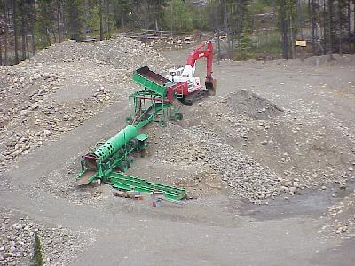
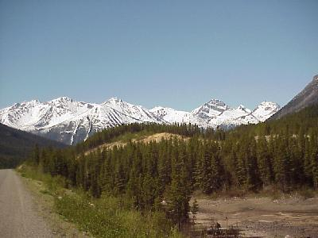
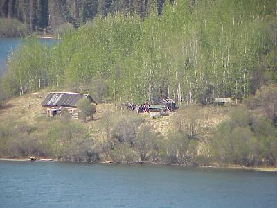
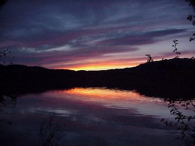

June 12, 7385 miles
| We started the day leaving camp at 8:00, after filling up with gas and grabbing a quick breakfast - today is supposed to be a traveling day. | |
| This is new road to us, and sections are gravel so the travel is slow. There are a number of stops to view the sights, such as this modern placer gold mine. Quite a difference compared to Dredge #4 from a few days ago, but the same basic technology is used for separating the gold from the rocks and sand. |  |
| As you might have guessed there had the be the daily mountain picture (at least it seems like I put one in daily) - a lot of these views again today. |  |
| Another interesting sight is this ghost town - the former town of Laketon. This was once the administrative center of this district, during the Cassiar Gold Rush Days (1872-80), and a major boat building town for the area. |  |
Sunset! This is the first one of these we have seen for days! This is still 11:00 PM though. We are camping again tonight, this picture was taken from the back of the campsite. |
 |
| Well we screwed up a little on this
"travel day" and only made it 225 miles. And we
didn't see one large mammal - skunked! No moose... No
bear... No deer... No sheep, nor goats. No elk or caribou
- nothing but forest, hills, mountains, ponds, lakes,
rivers and streams ... still very nice. But speaking of ponds, lakes rivers and streams; we did goof off a little today and did some casual fishing - landed one 10" rainbow trout (released), and had two others on the hook (barbless hooks are fun). |
|